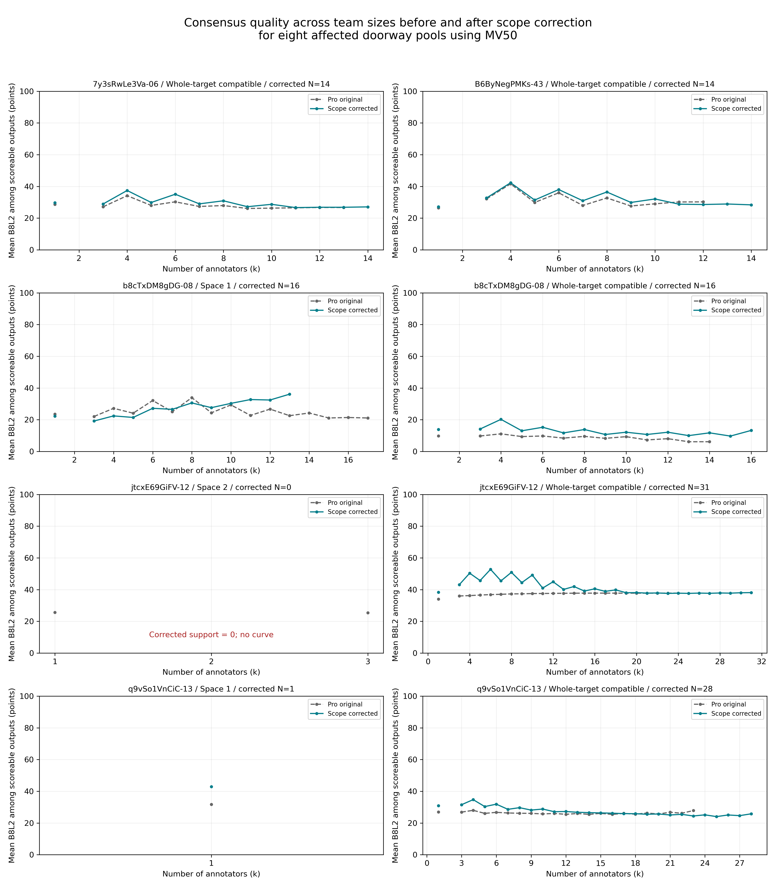

16份归属修正，5图8池；实际补算16,219个团队。另补2,034个团队完成排除13份的6人、10人敏感性。原Pro版本保留。
| 17图主比较 | B8L2差 | 完整可评率差 | 质量双端可评路径 |
|---|---|---|---|
| 10人：筛后−筛前 | +0.466 | +2.34 个百分点 | 3507 |
| 10人：全部兼容−混合 | +1.481 | +11.35 个百分点 | 3618 |
| 筛后混合：6→10人 | -1.619 | +12.61 个百分点 | 2927 |
质量只对双端可评路径作差，完整率分母为4,352。兼容组队B8为8图提高、7图降低、2图相同；建筑重抽区间跨零，不应写成普遍升质。jtc-12空间2变为零支持；排除13份后的兼容池10人比较仅16图。

旧版九份视觉分歧敏感性和全人数排除13份曲线未重建，详见报告边界。